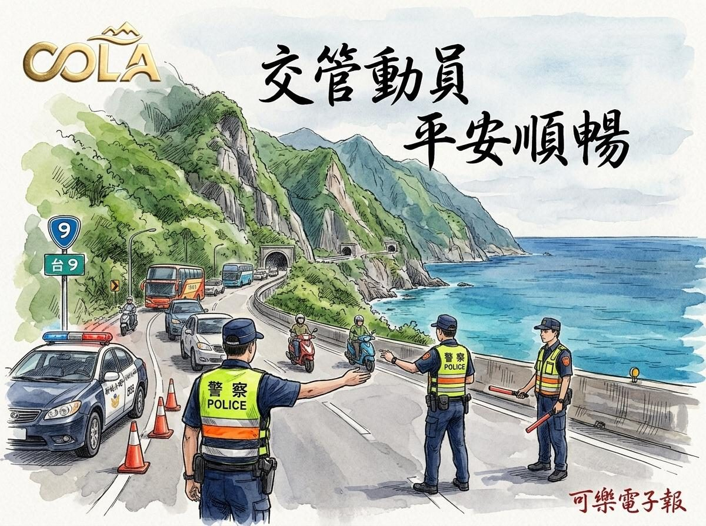

光復節3天連假將至！新城警全線動員疏導 蘇花路廊與中橫交管時段一次看

可樂電子報小編/編輯
115年光復節連續假期將於10月24日至26日展開，為期3天。花蓮縣警察局新城分局作為花蓮北境第一道門戶，肩負引導南下龐大車流的重要任務，警方已全面編排專案疏導勤務，針對台9線、台8線中橫公路、台14甲線及七星潭風景區等樞紐節點派駐定點與巡邏崗哨，全力守護用路人行車平安。

因應連假出遊及返鄉車潮，交通部公路局針對蘇花路廊實施時段性車種管制。台9線與台9丁線蘇花路廊（蘇澳至崇德路段）將開放大客車行駛蘇花改路肩，並禁止21公噸以上大貨車通行，管制時段包含24日清晨5時至下午17時、25日上午7時至11時，以及收假日26日中午12時至傍晚18時，提醒用路人妥善規劃上路時間。

中橫公路與合歡山地區亦同步祭出通行與高乘載管制措施。台8線中橫公路關原至天祥路段每日清晨6時30分至下午16時30分開放雙向通行，18時30分起夜間封閉；天祥至太魯閣口路段則通行至傍晚18時。此外，台14甲線18K翠峰至41K大禹嶺於連假期間每日0時至8時實施高乘載管制，限制乘載3人以上小客車通行，有效維持山區動線順暢。
新城警分局呼籲，連假期間出遊民眾務必提早出發避開壅塞熱點，出門前詳細檢查車輛機件與胎壓，防範山區拋錨意外。行經各路段請密切遵循現場員警指揮，並嚴格遵守速限切勿酒駕或違規超車，平安享受連假假期。
📸 更多現場紀實影像


▶ 延伸觀看
📺 相關報導影片：點此於 YouTube 觀看完整報導